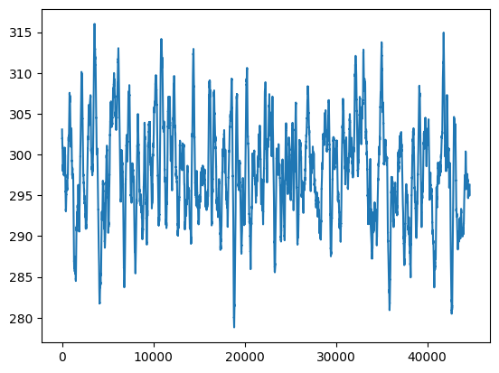
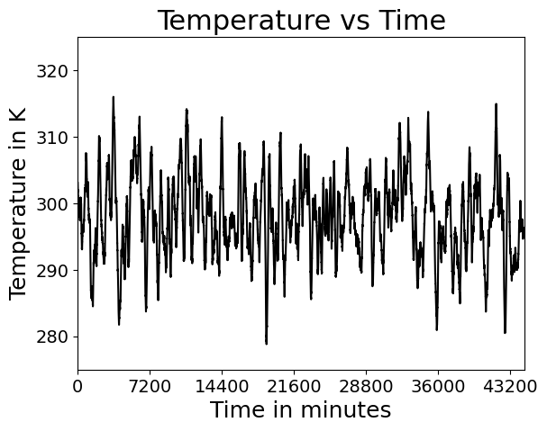
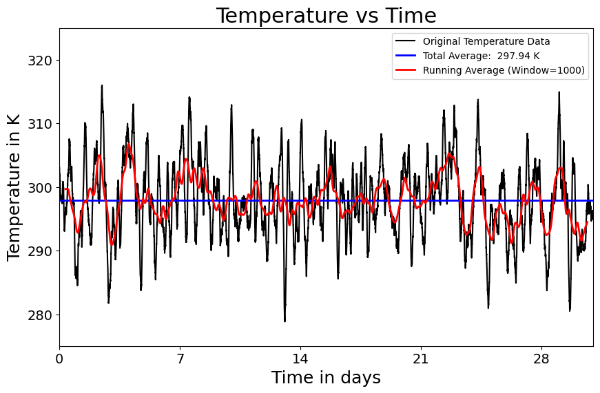
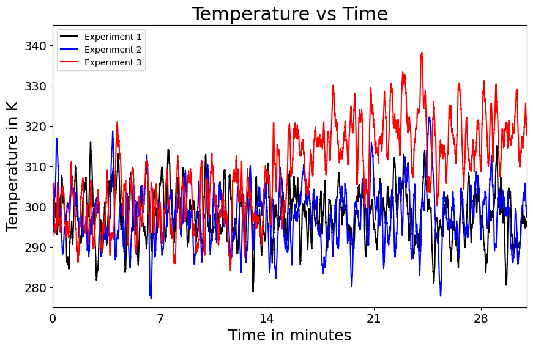
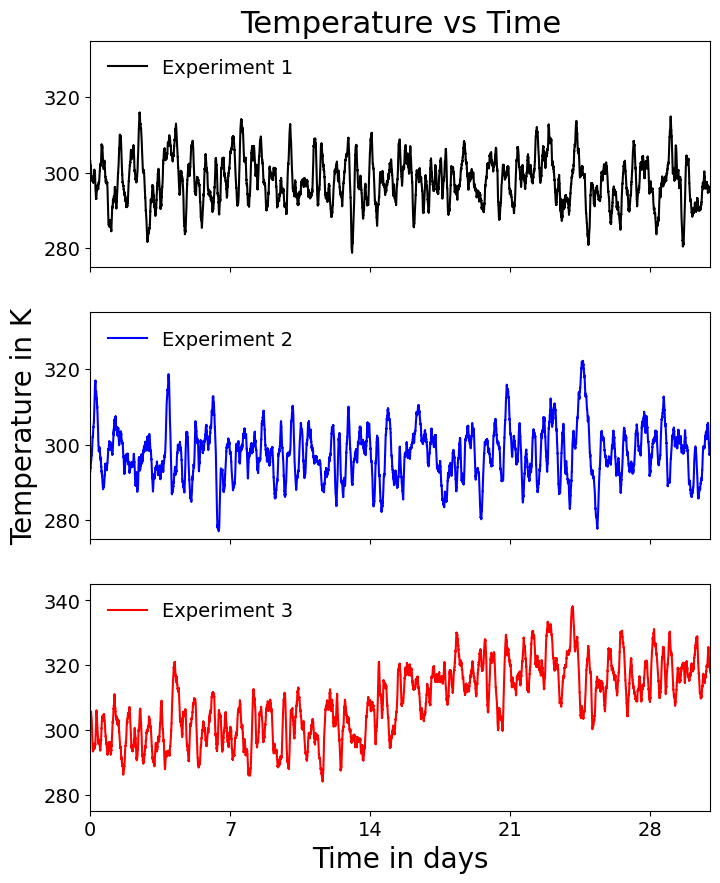
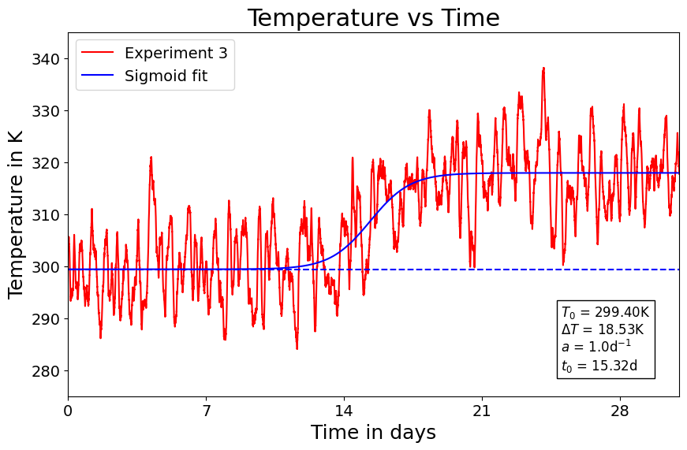
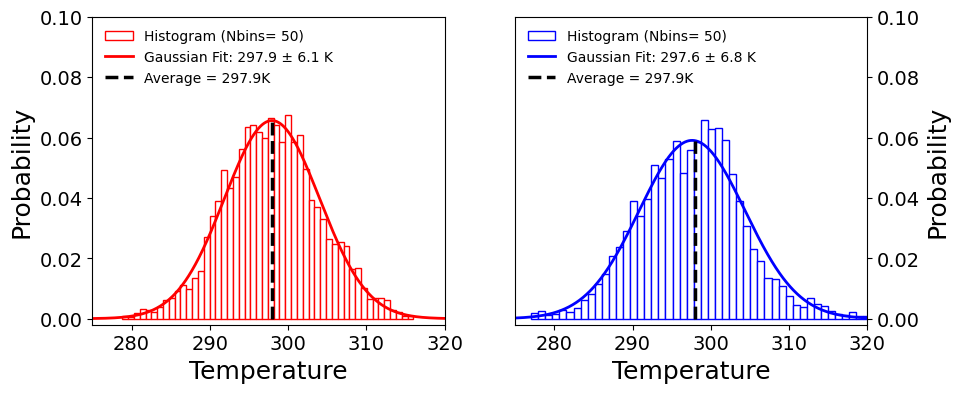

Exercise
In this exercise, we will repeat the first lecture of the course. We will:
- We will learn how to read data from a file.
- We will learn how to inspect the data.
- We will learn how to make quickly some plots.
Lecture 1
Data
The experiment:
We have multiple synthesis reactors in which we are running a series of experiments.
Each reactor has a temperature sensor which monitors the temperature inside of it every minute for 4 days.
Our task is to check if the temperatures in the reactors are stable.
The data for reactor 1 is stored in
Temperatures_1.csv.The data for reactor 2 is stored in
Temperatures_2.csv.The data for reactor 3 is stored in
Temperatures_3.csv.
Task
- Look at the plain data files. In which format are the data stored?
- Read the data from the files.
- Inspect the data.
- Transform the data into days.
- Make a plot of the temperature in the reactor 1, 2 and 3 first in one plot.
- Make a (1,3) subplot of the temperature in the reactor 1, 2 and 3.
Questions
What do you think? Are the temperatures stable in the reactors? Which reactor has the most stable temperature?
Inspect Data
print(reactor_1.head()) print(reactor_2.head()) print(reactor_3.head())
Customizing the Plots – Ticks, Labels and Fontsize (very low difficulty)
Extract the data columns into separate arrays time and temperature (optional)
Set up the plot by using the arrays time and temperature – color ‘k’ is black
Adjust x- and y-range using plt.xlim(min,max) and plt.ylim(min,max)
Use plt.xticks() to set the interval to 7200
5 days \(\cdot\) 24 hours \(\cdot\) 60 min = 7200 min
Add labels using plt.xlabel(), plt.ylabel() and plt.title()
(use fontsize = to adjust the size)
Use plt.tick_params() to increase the size of the tick labels using labelsize = x
After adjusting all settings, bring it home using plt.show()

Further customization – adding averages (low difficulty)
Change the x-axis from minutes to days
days = time / 60 / 24
Control the size of the plot using plt.figure(figsize = (x, y))
Add the average temperature using np.mean() and plt.achline()
add a running average using a window size of 1000 points
using np.convolve()
Use different colors for the plots
black: color = ‘k’
red: color = ‘r’
blue: color = ‘b’
Add a legend by adding label = ‘my label’
Adjust the axis range, labels and fontsize as before
When done, again: plt.show()

Data from Different Files (low difficulty)
To import data from the other two files just re-use the commands from above.
In this example, it is sufficient to only extract the y-data.
We can even re-use the array days calculated above.
We plot all three temperature arrays and assign different colors.
Adjust the axis range, labels and fontsize as before.
Place the legend into the upper left corner using plt.legend(loc=‘upper left’).
When done, again: plt.show()
OH NO! Experiment 3 is messed up!!

Data from Different Files in Different subplots (low difficulty)
Plotting the data in different subplots of a single figure is very simple.
Define a figure fig with three subplots being ax1, ax2 and ax3.
In this example, the subplot is composed of 3 rows and 1 column.
For example plt.subplots(2,2) is composed of 2 rows and 2 columns.
To customize provide commands separately for each subplot.
Use for-loops to apply the same settings to different plots.
Assign axis labels individually.
Careful: Commands for subplots are a bit different from just a normal plot.

Sigmoid Curve Fitting
Let’s analyze how bad the situation is in experiment 3 is. To do this, we will fit a sigmoid curve to the data set using curve_fit() from the SciPy module scipy.optimize.
In our case the sigmoid function is given by:
\[ T(t) = T_0 + \Delta T \frac{1}{1 + e^{-a (t - t_0)}} \]
with the four fitting parameters being: - temperature baseline $ T_0 $, - the temperature increase $ T $ , - the growth rate $ a $ , - the time at the midpoint of the temperature increase $ t_0 $
After fitting the curve, we can plot and overlay it with the original data for comparison.

